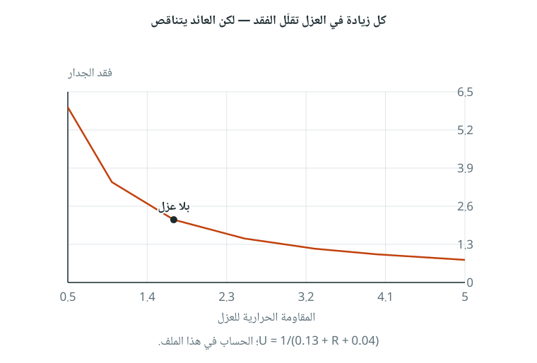

كيف نحسب أثر العزل في فقد الحرارة؟
Insulation payback, computed not guessed
تقلل زيادة مقاومة الجدار الحرارية معدل فقد الحرارة. يبدأ المثال بحساب القدرة الحرارية المفقودة قبل إضافة العزل وبعدها، وهي خطوة في تقدير الوفر السنوي.
فقد الحرارة عبر جدار يُحسب بثلاثة أرقام: المساحة، فرق الحرارة، ومعامل النقل الكلي U. وU هو مقلوب مجموع المقاومات: مقاومة الفيلم الداخلي والخارجي ومقاومة كل طبقة (السماكة مقسومة على الموصلية). جدار بلا عزل بمقاومة 1.7 يعطي U = 0.53 واط/م²·كلفن، وجدار بعزل مضاعف بمقاومة 3.3 يعطي 0.29. لمساحة 200 متر مربع وفرق 20 كلفناً، الفقد ينزل من 2.14 كيلوواط إلى 1.15 — أي 990 واط مستمرة، لا لحظة ذروة. على مدار شهور التبريد أو التدفئة يصير الفرق آلاف الكيلوواط ساعات، وهو ما يُقارن بثمن المتر المربع من العزل ليعطي زمن الاسترداد.
كيف تعمل الظاهرة؟
الحرارة تنتقل بالتوصل عبر المواد وبالحمل على السطحين. المقاومات على التوالي تُجمع، وكل زيادة في السماكة تضيف مقاومة لكنها تنقص العائد: منحنى الفقد يتناقص أسّياً مع السماكة، فالمليمترات الأولى أثمن من الأخيرة. لهذا لا يوجد «سمك مثالي» منفصل عن ثمن الطاقة.
العلاقة بالأرقام
U = 1/(R_films + R_wall) = 1/(0.13 + R + 0.04). عند R=0.5 ← U=1.49؛ عند R=1.7 ← 0.53؛ عند R=3.3 ← 0.29؛ عند R=5 ← 0.19. لمساحة 200 م² وΔT=20 كلفن: 5.97 / 2.14 / 1.15 / 0.77 كيلوواط على التوالي. الفرق بين R=1.7 وR=3.3 يساوي 0.99 كيلوواط، أي نحو 8,700 كيلوواط ساعة في السنة عند تشغيل 8,800 ساعة.
مفاهيم متقاربة
R قيمة طبقة، وU قيمة التجميع كله. من يعزل مادة عالية المقاومة لكن يترك جسراً حرارياً (عمود خرساني، إطار معدني) يخسر أثر العزل: الجسر يختصر مسار المقاومات كلها. ولذلك تُقاس الجودة بالنقاط الباردة والتصوير الحراري، لا بسمك المادة وحدها.
حدود التطبيق
الحساب في حالة مستقرة ولا يحسب السعة الحرارية للكتلة (التي تؤخّر الفقد). ولا يدخل الرطوبة التي تُخفض موصلية العزل عند تبلّله، ولا التسرب الهوائي الذي قد يتجاوز فقد التوصل في المباني القديمة. والأسعار تتغيّر، فالحكم الاقتصادي يُعاد حسابه لا يُنسخ.

| الكمية | القيمة | المصدر |
|---|---|---|
| معامل النقل الكلي لجدار بمقاومة 1.7 | 0.53 W/m²·K | [1] |
| معامل النقل الكلي لجدار بمقاومة 3.3 | 0.29 W/m²·K | [1] |
| الفقد السنوي الموفّر لجدار 200 م² | 8700 kWh | [1] |
المصادر
- 1 OpenStax, College Physics 2e — Conduction — OpenStax. openstax.org/books/college-physics-2e/pages/14-5-conduction · اطُّلع عليه 2026-11-16
- 2 Engineering ToolBox — Overall Heat Transfer Coefficients — Engineering ToolBox. www.engineeringtoolbox.com/overall-heat-transfer-coefficient-d_434.html · اطُّلع عليه 2026-11-16
راجعه: مراجعة آلية — ديوان المعرفة (أرقام محسوبة + مصادر متحققة) 2026-11-16 · 2026-11-16 · آخر تحديث 2026-11-17
رجوع إلى المقالات